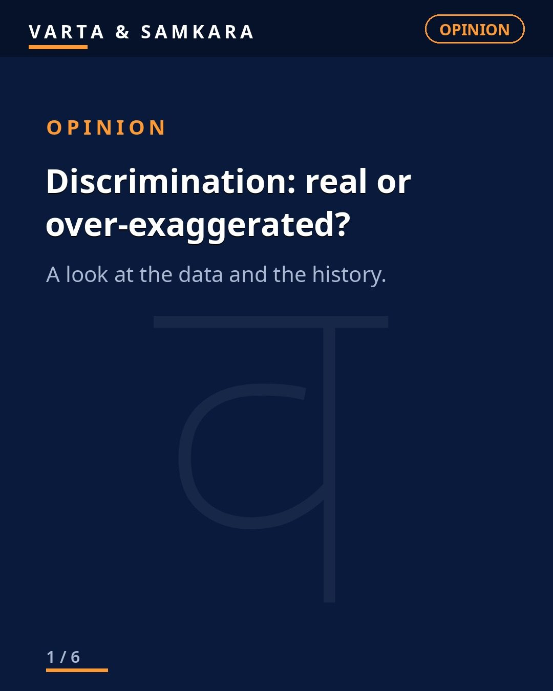
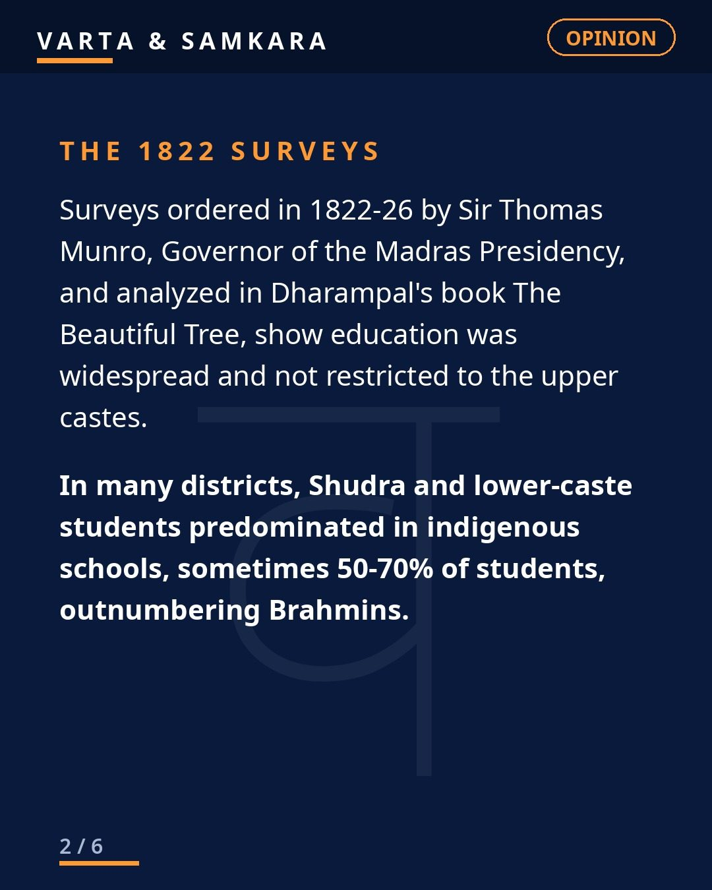
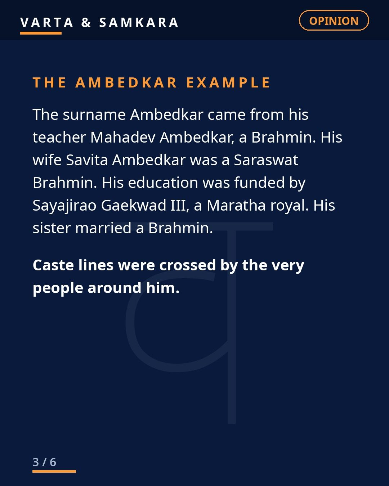
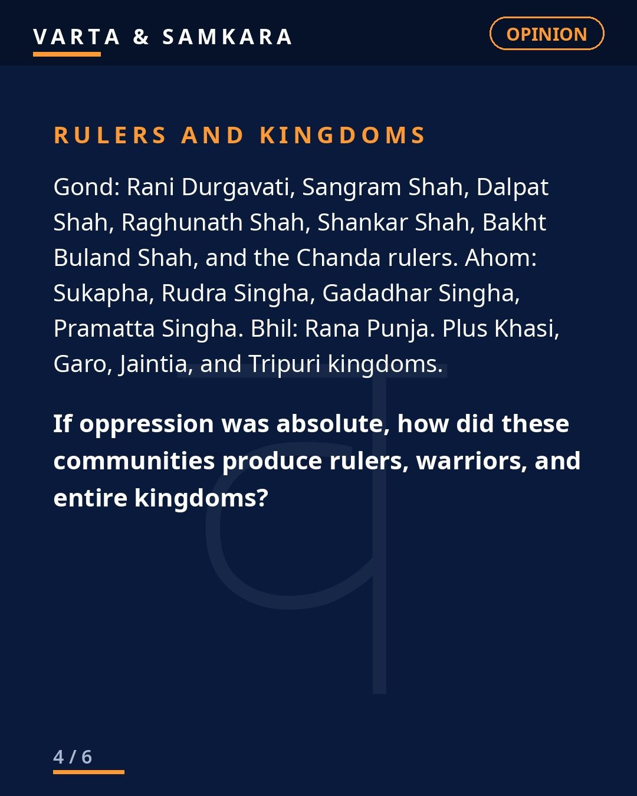
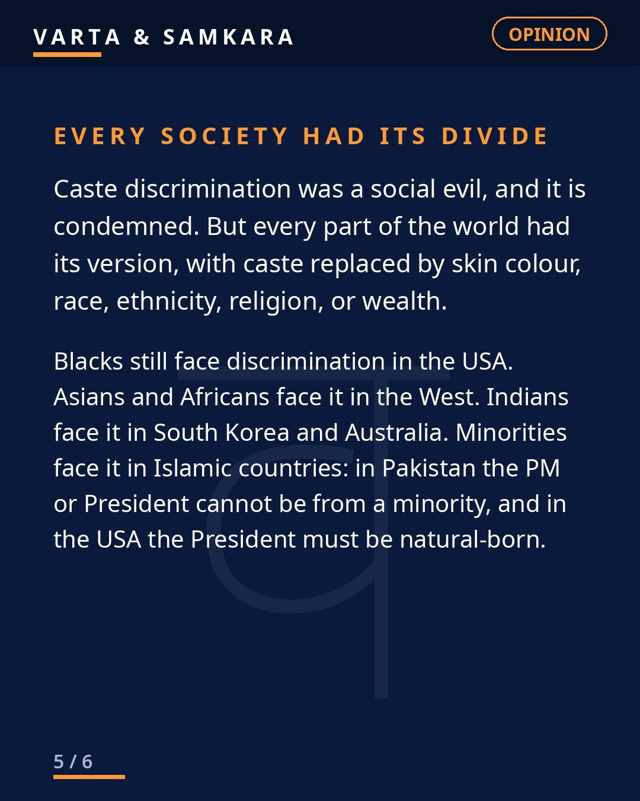
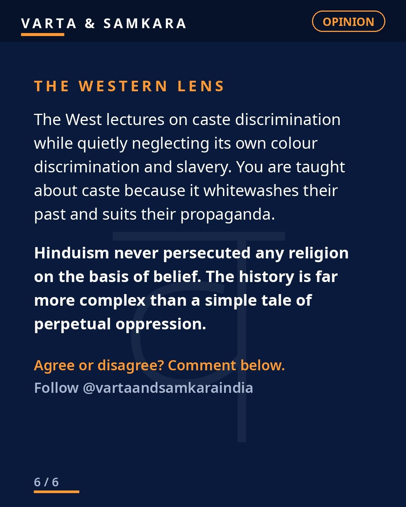

Opinion
OPINION | Discrimination: real or over-exaggerated?

Discrimination: real or over-exaggerated? It is the question nobody is allowed to ask calmly, which is exactly why it needs to be asked calmly.
The standard story is simple: for thousands of years, upper castes oppressed lower castes, denied them education, and kept them crushed. It is told as settled fact. But the historical record is more complicated than the slogan.
What the old surveys actually show
The 1822-26 Madras Presidency surveys, studied in Dharampal's "The Beautiful Tree", show Shudra and lower-caste students forming 50 to 70 percent of indigenous schools in many districts. Read that again. In the early 1800s, in district after district, the majority of students in native schools were from Shudra and lower-caste backgrounds.
That single fact does not fit the simple tale. If education was systematically denied to lower castes for millennia, who were all these students? The data suggests a far more complex reality: indigenous education was widespread, it included large numbers of lower-caste students, and it was the British colonial system, not ancient custom, that disrupted much of it.
Individuals who crossed the lines
History is also full of people who do not fit the cartoon version. Ambedkar's teacher, his wife's family, and his patron all crossed caste lines. His story is real and his struggle was real, but even his story shows a society where individuals could and did cross boundaries, where a Mahar boy could be educated, mentored, and supported across caste lines.
And zoom out further. The Gond, Ahom, Bhil, Khasi, Garo, Jaintia and Tripuri communities produced rulers and entire kingdoms. These were tribal and so-called lower communities running states, commanding armies, building administrations. The idea that everyone outside the top of the hierarchy was permanently powerless does not survive contact with this history.
Every society had its divide
The history is more complex than a simple tale of perpetual oppression. And here is the wider point: caste was not humanity's only divide. Every society had its version, through skin colour, race, ethnicity, religion, or wealth. Hierarchy is a human universal. Singling out one civilization's version as uniquely evil while ignoring every other society's equivalent is not history. It is politics.
So what is the honest position
None of this means discrimination never existed. It did, in forms both petty and cruel, and denying that would be dishonest. The question in the title is not whether discrimination was real. It was. The question is whether the flattened, cartoon version, perpetual, total, unchanging oppression with no exceptions, matches the evidence.
It does not. The surveys, the kingdoms, the individuals who crossed lines, they all point to a messier, more human reality. And we should prefer the messy reality, because only the truth can guide fair policy. Exaggeration does not help the disadvantaged. It just poisons the conversation.
In pictures





Source: Editorial (user viewpoint, full uncondensed text)
Visuals: Original text graphics
See the original reel / carousel with motion graphics on Instagram.
View on Instagram